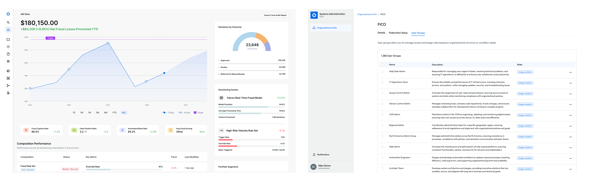
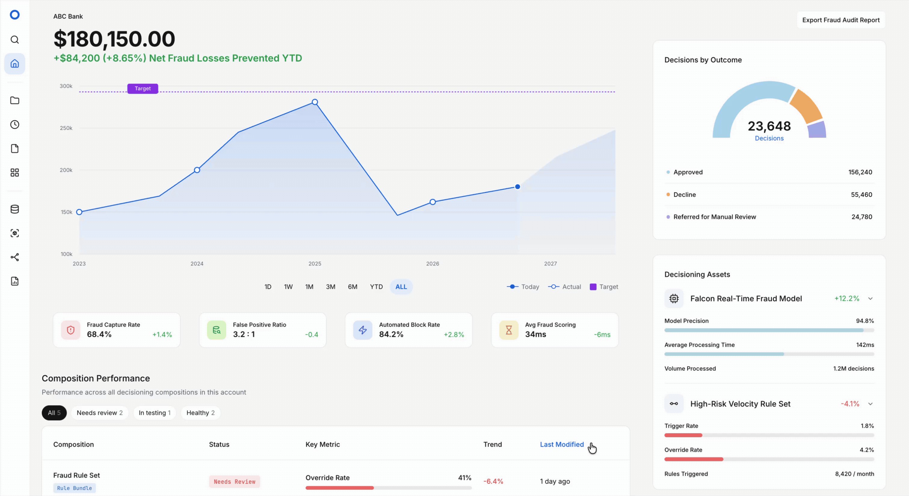

Onboarding & Dashboards
Every user of the FICO Platform landed on the same generic screen, whether they were an admin, an analyst or a solution builder. I led the design of two things that fix that: the admin flow that provisions users and roles, and the role-based homepages that make the platform show each person what matters to them.
I owned the design strategy end to end, from the admin provisioning flow to the persona landing pages. I worked with the Product Managers and architects to decide what shipped first and what we tested at FICO World. The first internal release focused on admin provisioning, since every other user depends on it.

Context
Users struggle with the current platform. Homepages cluttered with irrelevant information leave them unsure what to do next and bury what matters.
With no way to organize users by role, everyone is forced into the same generic experience.

Persona
Primary UserAdmin (FICO & Client)
Goal: Be the invisible force that keeps systems stable, secure, and performant with minimal manual intervention.
Pain Points: Manual, fragmented processes trap them in reactive firefighting instead of proactive governance work.
User Flow
-
Setup
- Digitize Contacts
- Create Organizational Unit
- Create Admin Group & Configure Identity Profile
-
Configure
- FICO Assigns Organization to User Group
- Define Policies (Base, Data, SLAs)
- Define Deployment Targets
- Create Roles & Groups
-
Assign Access
- Assign Users & Roles to Groups
- Configure Organizational Structure
-
Launch & Notify
- FICO Admins send Welcome to Admin
- Client Admins send Welcome to Users
- Platform Established
Key Design Decisions
The choice: For the first internal release, we built admin provisioning and user-group setup before the persona dashboards.
The alternative: Most of the team wanted to ship the three persona dashboards first, since that's what the majority of users would see.
Why provisioning won: The VP of Architecture opposed this and argued that setup has to work seamlessly before anything else can function. Without provisioned users, roles and groups, no one reaches a personalized workspace.
The choice: I couldn't attend FICO World in person. With the Product Manager, Front-End Architect and User Researchers, we narrowed the showcase to three landing pages: Service Creator, Business Analyst and Solution Creator. These pages carry the most varied, user-specific information and are the most revisited.
The limitation: The people we tested with weren't true representatives of each persona, so we likely didn't catch every pain point. I treat the findings as strong early signal, not proof.
The choice: Each persona's homepage shows only what that role needs most, not everything the platform can do.
Why: Too much information was the original problem, so I didn't want to repeat it. Some components and features also don't appear for certain user groups because of permissions, so the layouts had to hold together whichever pieces a user is allowed to see.
Trade-off: Role-specific pages mean more design and build work per persona, and less discoverability of features outside someone's role.
User Research at FICO World 2025
While I wasn’t able to attend FICO World in person, I collaborated with the Product Manager, Front-End Architect, and User Researchers, to determine which screens to be tested.
Optimizing for high-value feedback and tight presentation windows, we decided to narrow our showcase to the landing pages of 3 distinct personas. The landing pages would be areas with the most diverse information that’s user specific and would be the most revisited.
The three persona landing pages we focused on were:- Service Creator
- Business Analyst
- Solution Creator
Personas
Service Creator
The day-to-day orchestrator juggling work streams across different tools. Needs one place to see what's due, who owns it, and what needs attention now. Otherwise, deadlines slip and ownership gets lost.
Business Analyst
The builder and owner of asset relationships. Needs to see dependencies clearly so they can spot reuse opportunities and change safely. Otherwise, they're blind to cost savings and downstream ripples.
Solution Creator
The builder and owner of asset relationships and compositions. Needs to see dependencies and reuse clearly so they can spot optimization opportunities and change safely. Otherwise, they're blind to cost savings and the downstream ripples of their changes.
All 3 personas share the same underlying pain of missing critical relationships in their domain and being forced to manually piece together what needs unified visibility.
Research Findings
- 72% rated personalization as very/extremely important
- 80% wanted customization capability
- 8 features confirmed as HIGH priority
- Service Creators identified 'My Work' as essential.
- Users consistently expected role-based customization and persistent preferences.
What I'd measure after launch
This hasn't shipped yet — these are the targets I'm designing against, not results.
- 70%+ Target relationship map clarity for Solution Creators, up from 27% pre-launch
- 85%+ Target filter/sort persistence adoption across all three personas
- -30% Target reduction in time to find work for Service Creators
Tested vs. Redesigned
Post-FICO, I continued using Figma x Claude Code on my own time, to redesign the 3 core landing pages with no technical restrictions and focusing on the feedback from FW2025.
Service Creator
The Service Creator's homepage is built to keep every active build in view. My Work consolidates all in-progress compositions in one place, while quick actions for creating solutions, browsing assets, and finding products sit above the fold for the tasks you do most.
Value the Redesign Provides: The redesigned homepage gives the Service Creator a single place to run their day. Tasks, recent work and release status sit on one screen, with search across both. Items that need attention are flagged and sorted to the top, each composition shows its owner and dependents, and the release view lists what's blocking a release. The page can be customized to show only what they use.
Pain Point Relieved: Work spread across different tools meant missed deadlines and lost ownership. Tasks, owners and blockers now share one view, so overdue or at-risk work is visible and it's clear who is responsible.
Business Analyst
The Business Analyst's homepage is built to surface business performance at a glance. KPIs for fraud prevention, conversion, profitability, and spend sit up top, while a dedicated panel highlights which assets are driving results — so the Analyst can spot what's working without digging through reports.
Value the Redesign Provides: The redesign turns the Business Analyst home from a performance snapshot into a decision-making hub. Each savings opportunity shows its dollar value, evidence and downstream impact. A dependency workspace reveals how assets connect, a change-impact check confirms safety before action, and a "needs your attention" strip prioritizes risky changes and flagged assets.
Pain Point Relieved: Analysts couldn't see asset connections, duplications or the downstream cost of changes, so they guessed or avoided risk. Making dependencies and the ripple of each change visible lets them build the case for savings and act safely.
Solution Creator
The Solution Creator's homepage is built to catch problems before they spread. An asset inventory tracks ownership and status, a live relationship map shows how solutions depend on each other and where work can be reused, and a real-time alert feed surfaces issues as they happen.
Value the Redesign Provides: The redesigned dashboard shows asset relationships through an interactive Relationship Map. The optimization view flags unused assets (e.g., "Unused 90+ days") and redundant ones (e.g., "92% overlap") with direct links to them. Needs-attention alerts and performance metrics sit alongside net fraud losses prevented, making the impact of their work clear.
Pain Point Relieved: Without a view of dependencies and reuse, Solution Creators were blind to cost savings and the downstream effects of changes. Now they can see what depends on what and where assets are duplicated or idle, so they can optimize with confidence.